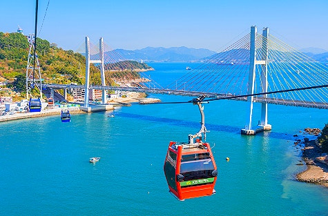
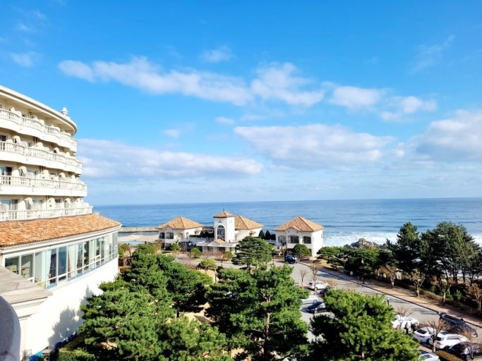
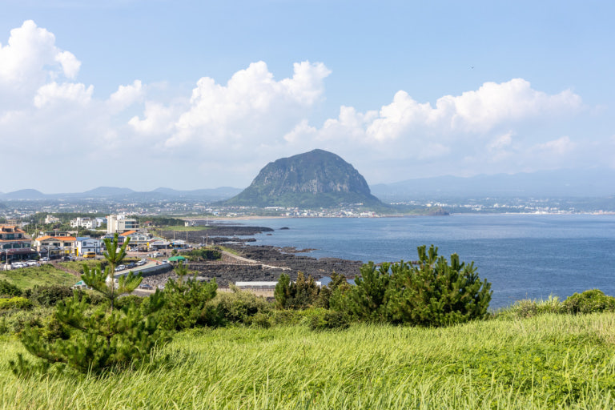

AREA
여수
여수는 제가 사람들에게 여행지를 말할 때
꼭 들어가는 여행지 중에 하나입니다.
포항의 바다와는 또 다른 느낌을 주는 여행지 입니다.
양양
겨울에 가는 양양은 눈이 많이 내려서
예쁜 풍경을 어디서나 볼 수 있는 것이 특징입니다.
또한 서핑으로도 유명한 곳이라 서퍼들이 찾기 좋은
여행지 입니다.
제주

사계절 언제 가더라도 제주도 만큼 자연 경관을 즐길 수
있는 여행이도 없을 것 입니다.
특히나 꽃이 활짝 핀 봄에 가는 것을 추천 드립니다.